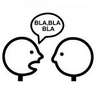
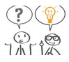

Vous souhaitez échanger avec un professionnel, sans entrer dans un processus d'accompagnement?
1h par téléphone pour
ÊTRE ÉCOUTÉ

RÉFLÉCHIR: analyser, clarifier, comprendre, prendre du recul
AVANCER: envisager les options, faire un choix

obtenir un AVIS* ou un CONSEIL** honnête et bienveillant
*si un avis extérieur est pertinent
**dans certains domaines: soi et ses relations, et dans le domaine professionnel ce qui touche à l'efficacité individuelle et collective
{% for QR in site.data.QR %}
{% include al type='paragraphe' %}
{% include al type='titre_p' %}
{{QR.titre}}
{% include al type='fin_titre_p' %}
{% include al type='suite_titre' %}
{{QR.contenu}}
{% include al type='fin_suite_titre' %}
{% include al type='fin_paragraphe' %}
{% endfor %}